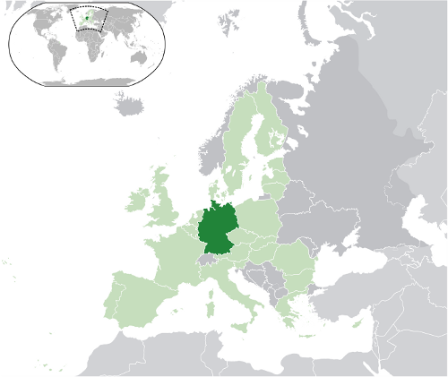

Republica Federală Germania (în germană Bundesrepublik Deutschland), denumită colocvial Germania (Deutschland, sens literal: „țara germană”), este un stat în Europa Centrală. Face parte din organizații internaționale importante precum Consiliul Europei (1951), OCDE, Uniunea Vest-Europeană (1954), NATO (1955), Uniunea Europeană (1957), ONU (1973), OSCE și din zona euro.

Suprafața totală a teritoriului țării este de 357.021 km², relieful fiind preponderent muntos.
Germania se învecinează cu nouă țări europene: Danemarca, Olanda, Belgia, Franța, Luxemburg, Elveția, Austria, Republica Cehă și Polonia.
De asemenea are ieșire directă la Marea Baltică și la Marea Nordului (Oceanul Atlantic).
Germania are o climă temperată, cu o temperatură medie anuală de 9 °C. Temperatura medie în ianuarie variază de la -6 °C până la +1 °C (în funcție de localitate și altitudinea ei), în timp ce temperatura medie a lunii iulie variază între 16 și 20 °C. Precipitațiile sunt mai mari în sud, unde se înregistrează 1.980 mm pe an, majoritatea sub formă de zăpadă.